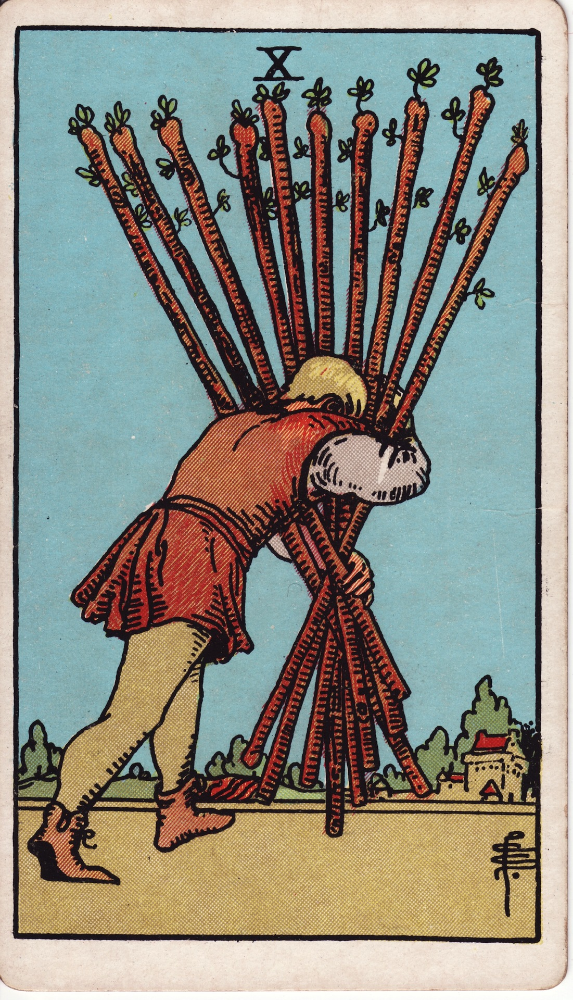
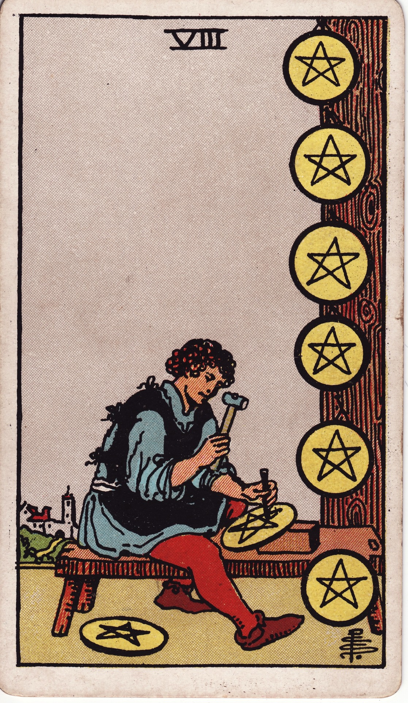
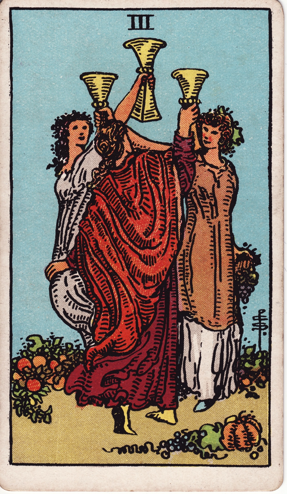

Lesson 03 · Tarot
The Four Suits as Four Kinds of Problem
Fifty-six cards, but only four subjects. Learn what each suit is about and every minor card you ever draw will hand you its first sentence before you have looked at the picture at all.
By the end of this page you can take any real-life question and say which suit would carry it — and take any suit card and say which corner of life it is talking about. That single move is half of reading a minor card; lesson 4 adds the other half.
Lesson 2 left you able to sort the deck and rank a card's register from structure alone. The next payoff comes from one more fact of the architecture: within the fifty-six, suit is the subject line. Waite says as much in the Pictorial Key — for the court and number cards, "the symbolism resides in their rank and in the suit to which they belong". Learn four subjects and you have learned something true about fifty-six cards at once, which is the best exchange rate this deck will ever offer you.
The doctrine: four elements, four domains
You already know where the assignments come from. Book T dealt the four classical elements across the suits in 1888, and each element works as a compressed metaphor for one domain of human experience. Here is the whole system, with the Golden Dawn's own words for each suit's root card:
| Suit | Element | The kind of problem it speaks to | Book T on the Ace |
|---|---|---|---|
| Wands | Fire | Will and drive — ambition, projects, competition, restlessness, burnout. | "Force, strength, rush, vigour, energy" |
| Cups | Water | Feeling and bond — love, friendship, grief, longing, celebration. | "Fertility, productiveness, beauty, pleasure, happiness" |
| Swords | Air | Mind and words — analysis, argument, hard truths, anxiety, the story you keep retelling yourself. | "Very great power for good or evil… strength through trouble" |
| Pentacles | Earth | Matter — money, body, home, craft, the slow accumulation of anything. | "Materiality in all senses… material gain, labour, power, wealth" |
The quotes are the titles-and-natures Book T gives the four Aces, each styled the "Root of the Powers" of its element (full text at hermetic.com, HTML mirror). The domain column is how a century of practice has unpacked those elements into everyday life — doctrine elaborated on doctrine, and worth learning precisely because your deck was painted from inside it.
For the game players who owned these suits for four centuries, Cups and Swords ranked tricks and meant nothing at all — no source before the divinatory turn of the 18th century assigns life-domains to the suit signs, which is Dummett's well-defended finding. Suit meanings are entirely a layer-2 possession. That is not a weakness for your purposes; it just means the system is learned from Book T rather than excavated from Milan.
A suit names the kind of problem rather than the topic, and holding onto that distinction is what separates a usable reader from a lookup table. Most real subjects can show up in more than one suit. Take your own job as an example: when what actually bothers you is ambition, energy, or whether you still want the work at all, the cards will speak in Wands, but when the same job is really a question of salary and long-term security, it belongs to Pentacles. A relationship behaves the same way. It sits in Cups as long as the question is about feelings, and moves over to Swords once it has turned into an argument you keep replaying in your head. So when a card lands, its suit tells you which of these four conversations you are actually having.
Smith painted the doctrine into the weather
None of this would be visible on a French-suited pack, but your deck was drawn nineteen years after Book T by an artist working from its curriculum, so in the RWS the doctrine is empirical: you can simply see it in the scenery. Watch the two pairs below do the "kind, not topic" move in pictures.




The palettes carry it too, and you will confirm this on your own table in a minute: fanned out suit by suit, the Wands cards run hot and yellow, the Cups keep finding rivers and gardens, the Swords sit under grey and storm-streaked skies, and the Pentacles stay in cultivated green. Smith staged each suit's element as its climate, which is why a reader who knows nothing else can still feel which conversation a card belongs to.
One question, four voices
Here is the skill from the other direction. Take a single live question — should I take the new job? — and listen to what each suit would ask about it:
| If the card is… | The reading is about… |
|---|---|
| Wands | Your fire for it. Does the work itself excite you, will it feed or burn your energy, what are you hungry for? |
| Cups | Your attachments. What the move does to the people and belonging involved, and how you actually feel under the pros-and-cons. |
| Swords | Your thinking. The trade-off analysis, the conversation you are dreading, the truth you may be avoiding stating. |
| Pentacles | Your ground. Salary, security, commute, health, what accumulates over five years if you stay the course. |
Notice that no suit answers the question — each one re-asks it at a different register, and that is precisely the service a spread performs. This is also your first taste of the mission's reflective use of the deck: four suits are a checklist of the four ways any decision can matter.
Do this now · with your deck
Ten minutes, cards in hand. The trumps can sit this one out entirely.
- Deal the four fans. Separate the fifty-six into suits and lay each suit out face-up in its own row, Ace to King. Stand back and look at the four rows as landscapes rather than cards.
- Run the mood test. For each row, say one word for its weather out loud — before consulting anything. Most people land somewhere near hot, tender, harsh, settled; whatever four words you choose, you have just read elemental doctrine straight off the pictures.
- Pull the two work cards. Ten of Wands and Eight of Pentacles side by side. Say aloud what each man's problem is, and which of them you have been this month.
- Pull the two bond cards. Three of Cups and Three of Swords side by side, and say why the heartbreak belongs to the suit of the mind rather than the suit of feeling.
- One question, four voices. Choose a real question of your own. Draw the Ace of each suit as a prompt and speak one sentence per suit — what would this suit ask me about it? You are rehearsing the exact move a three-card spread will demand in lesson 8.
- Speed round, and again tomorrow. Shuffle the fifty-six, flip fifteen cards one at a time, and call suit plus domain — "Swords, mind", "Pentacles, money" — under two seconds each. Rerun the round tomorrow; the overnight gap is what converts it to storage.
Check yourself
One attempt per question, no scrolling back up. A wrong answer here is worth more than a lucky one.
A friend keeps replaying an argument, polishing the comeback they never delivered. Which suit is speaking?
- Swords
- Cups
- Wands
The feeling started the story, but what your friend is doing now is mental rehearsal — words, argument, the retold narrative. That is Air's territory. Cups would be the grief itself; Swords is the loop of thinking about it.
A question about asking for a raise most naturally lands in…
- Pentacles
- Wands
- Cups
Money, security and what accumulates are Earth's domain. The same job would call in Wands if the question were about ambition or the hunger to move up — suit names the kind of problem, not the topic.
Book T says the Ace of Cups symbolises…
- Fertility, beauty, pleasure, happiness
- Force, strength, rush, vigour, energy
- Material gain, labour, power, wealth
That is Water's portfolio — the other two lists belong to the Ace of Wands and the Ace of Pentacles respectively. Each Ace is the "Root of the Powers" of its element, and the whole suit unpacks that root.
Why are the elements actually visible in your deck's suit scenes?
- Smith painted the 1888 doctrine into the 1909 scenery
- The elements were always drawn in the old game decks
- Waite uncovered them in the medieval Italian sources
The correspondence is Golden Dawn doctrine, nineteen years older than the deck — and Smith, working from that curriculum, staged each suit's element as its climate. Game decks never carried it, and nothing medieval encodes it.
Heartbreak's most famous card sits in Swords rather than Cups because…
- It shows the wound as a known truth, and knowing is Air's work
- Cups cards are reserved for positive emotional experiences only
- The Golden Dawn assigned all painful cards to one suit
The Three of Swords draws the heart as a diagram, pierced by blades under rain — pain at the stage where it has been stated and understood. Cups holds plenty of sorrow (wait for the Five), and every suit runs from bright to dark across its numbers.
Read this before the next lesson
Mary K. Greer, "The Golden Dawn Minor Arcana" — a working tarot scholar showing the machinery this lesson simplified: how the order generated every minor-card meaning by combining a suit's element with a number's quality, documented from an unpublished manuscript by one of its own members.
Read it for the shape rather than the detail — you will meet the number half of the machine properly in lesson 4. What matters now is seeing that "card meanings" were derived, suit by suit and number by number, not remembered from some ancient source; Greer is rigorous about who wrote what down and when.
I am your teacher here — ask me things. Anything thin, any claim you want the source for, anything that surprised you at the table. Some good ones to throw at me:
“Why does Air get conflict and trouble when air sounds so harmless?” · “Where do travel, health or study questions land?” · “Show me a Cups card that is genuinely dark.” · “Did Waite follow Book T's suit meanings exactly, or did he edit them?” · “What did the Golden Dawn do with the Wands–Swords swap some decks use?”